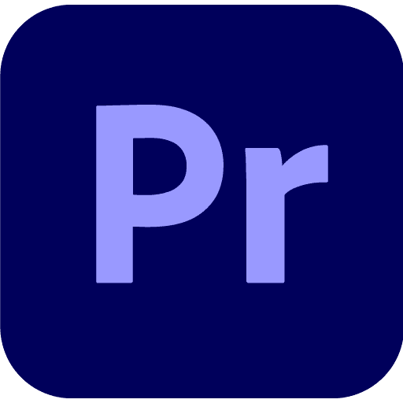
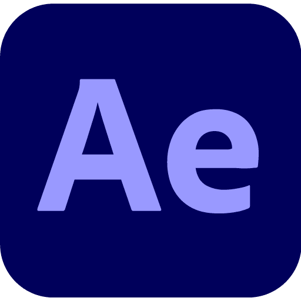

AutoCaps — תמלול עברית אוטומטי לפרמייר ודה וינצ'י
תמלול עברית
אוטומטי ומקומי
תוסף חכם שמייצר כתוביות עברית ישירות בפרמייר פרו ובדה וינצ'י — בלי ענן, בלי שרת, הכול על המחשב שלך.

Adobe Premiere Pro
Adobe After Effectsתמלול אמיתי, בלי פשרות
AutoCaps פועל לוקאלית — אין שליחת קבצים לשרת חיצוני, אין עלויות נסתרות, אין תלות בחיבור לאינטרנט.
עיבוד מקומי
הכל קורה על המחשב שלך. אין ענן, אין שרתים חיצוניים.
עברית מושלמת
מנוע תמלול מותאם לעברית עם דיוק גבוה.
בעזרת Ivrit-ai
שלוש פלטפורמות
פועל ב-Premiere Pro, ב-DaVinci Resolve וב-After Effects.
חיתוך שקט
זיהוי אוטומטי של קטעי שקט בטיימליין וחיתוכם בלחיצה אחת
עריכת פודקאסט
בטאמעבר מצלמות אוטומטי בין 2-4 דוברים לפי מי מדבר, כולל זווית "כולם ביחד"
מילון
מילון מילים אישי לשיפור התמלול
חינמי לחלוטין
קוד פתוח ובחינם, ללא מנויים.
כלי ה-AI שלנו בפעולה
בחרו תכונה, ולחצו על הכפתור בפאנל כדי לראות אותה קורית ישירות על הטיימליין
AutoCaps
תמלול אוטומטי לעברית, ישירות על הטיימליין הפעיל.
חיתוך שקט
מזהה קטעי שקט בטיימליין וחותך אותם אוטומטית.
פודקאסטבטא
מעבר מצלמות אוטומטי לפי מי מדבר, עד 4 דוברים.